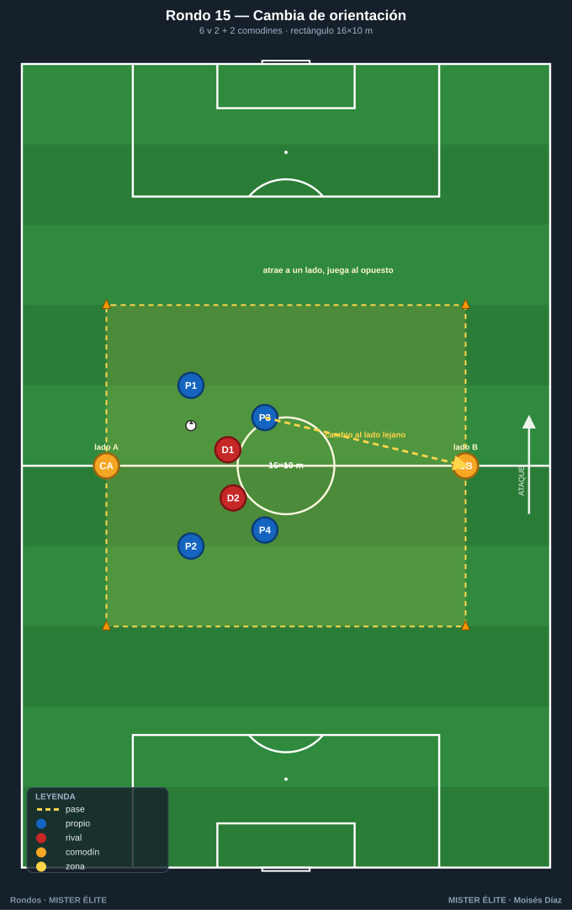
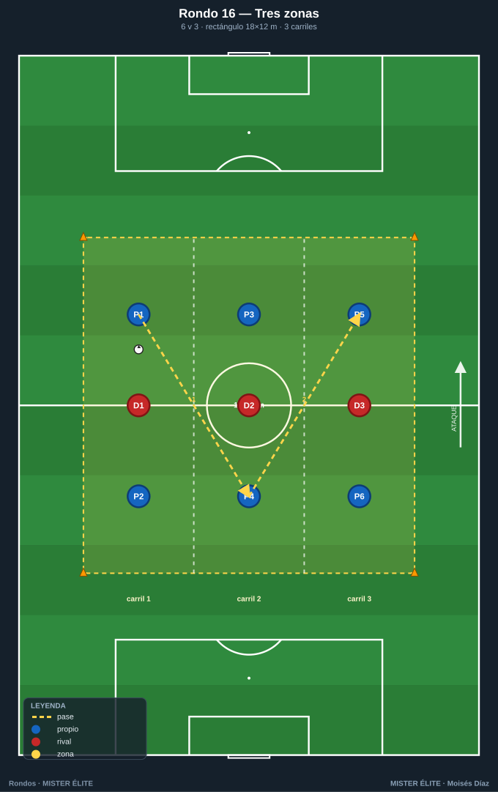
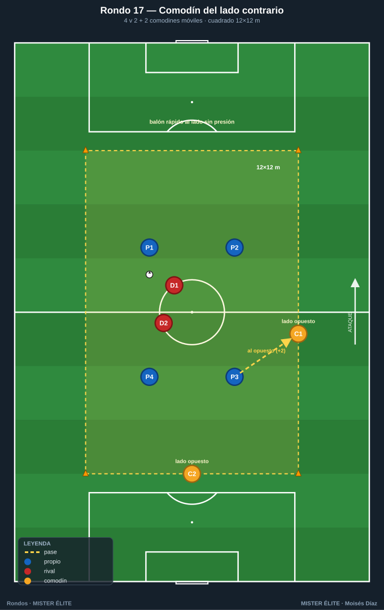
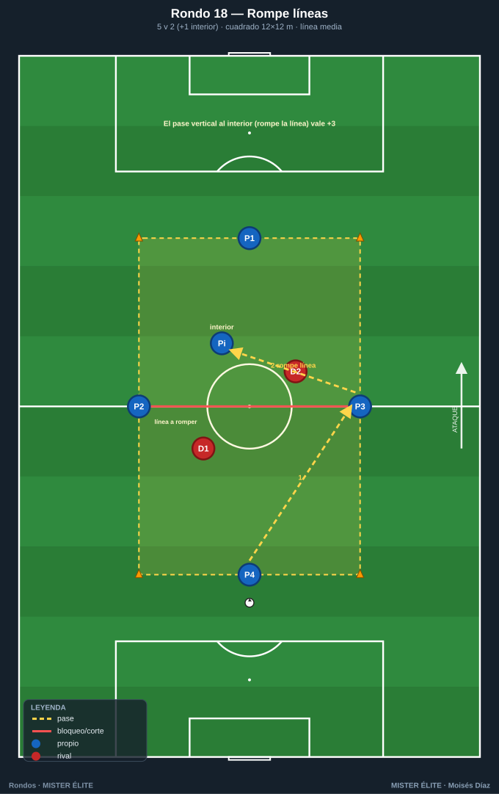
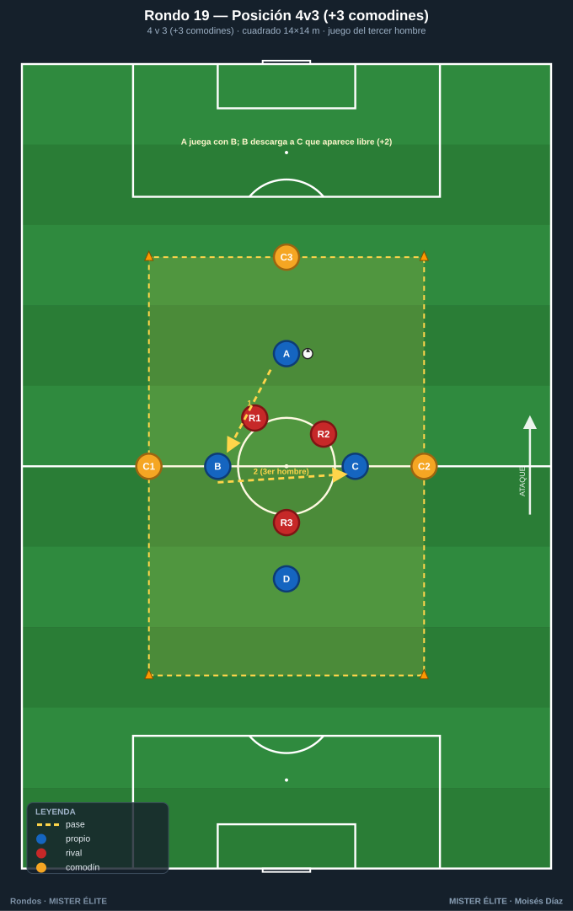
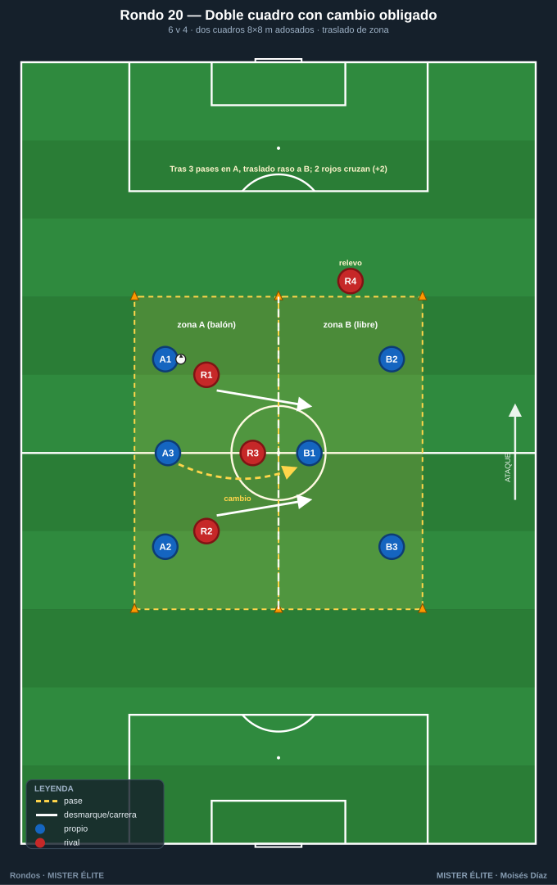
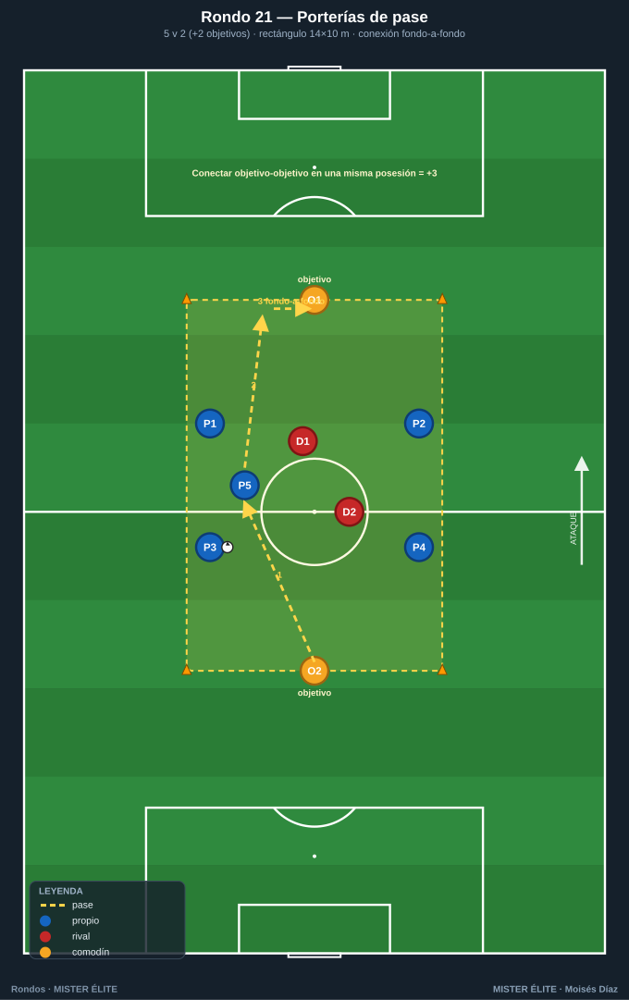

Familia 3 · Posicionales y de orientación (Rondos 15–21)
Cambio de orientación, rondo por zonas, jugar al comodín del lado contrario, romper líneas, juego de posición con sentido.
Notación: poseedores = azules, defensores = rojos, comodines = ámbar. Espacio con conos; flechas según
README.
Rondo 15 — "Cambia de orientación" (6v2 con dos comodines de banda)
Objetivo - Táctico: cambio de orientación: mantener en un lado para atacar el contrario; encontrar al comodín del lado lejano. - Cognitivo: identificar el lado débil (donde no está la presión).
Organización - Relación: 6 v 2 + 2 comodines (4 azules dentro, 2 ámbar fijos en bandas opuestas, 2 rojos). - Espacio: rectángulo 16×10 m; comodines en las dos líneas largas (lado A y lado B). - Material: 1 balón, 4 conos, petos.

Desarrollo 1. Los azules conservan atrayendo a los dos rojos a un lado. 2. El objetivo es cambiar el balón al comodín del lado contrario a la presión. 3. El comodín devuelve y se reinicia desde el nuevo lado.
Provocaciones (medibles) - +3 por cada cambio de orientación completado de un comodín al opuesto. - Para validar, 3 pases previos en el lado de la presión (atraer primero). - Comodines a 2 toques, fijos en su banda.
Variantes (fácil → difícil) - Fácil: 18×10, cambio libre. - Medio: 16×10, atraer 3 pases antes de cambiar. - Difícil: 14×10 + cambio directo de un comodín al otro puntúa doble.
Coaching - "Atrae a un lado para abrir el otro: el cambio nace de fijar primero." - "Mira al lado lejano antes de recibir; el cambio ya debe estar decidido." - Pase de cambio firme y al pie del comodín libre.
Duración / series: 4×3 min. Rotar comodines.
Rondo 16 — "Rondo en tres zonas" (posición por carriles)
Objetivo - Táctico: juego por carriles, ocupar racionalmente el espacio; progresar de zona en zona. - Cognitivo: reconocer en qué carril hay superioridad.
Organización - Relación: 6 v 3 repartidos por zonas. - Espacio: rectángulo 18×12 m dividido en 3 carriles verticales de 6 m. - Material: 1 balón, conos de 3 colores para los carriles, petos.

Desarrollo 1. Dos azules por carril (uno por zona mínimo), un rojo por carril. 2. El balón debe circular pasando por los tres carriles; no se salta ninguno. 3. Se busca el carril con superioridad para progresar.
Provocaciones (medibles) - +1 cada vez que el balón recorre los 3 carriles sin perderlo. - Prohibido tener más de 2 azules en el mismo carril. - Defensores no cambian de carril salvo coberturas pactadas.
Variantes (fácil → difícil) - Fácil: carriles anchos (7 m), se permite saltar un carril. - Medio: 6 m, paso obligado por los 3 carriles. - Difícil: defensores libres de carril + 2 toques.
Coaching - "Ocupa tu carril; no te amontones donde está el balón." - "Progresa carril a carril: paciencia para encontrar el lado fuerte." - Recibir orientado hacia el carril de avance.
Duración / series: 4×3,5 min. Rotar tríos.
Rondo 17 — "Comodín del lado contrario" (4v2 + 2 comodines móviles)
Objetivo - Táctico: jugar siempre al comodín opuesto al balón; cambiar el punto de juego con apoyos móviles. - Cognitivo: localizar el comodín libre que se reposiciona constantemente.
Organización - Relación: 4 v 2 + 2 comodines móviles. - Espacio: cuadrado 12×12 m; los 2 comodines se mueven por todo el perímetro. - Material: 1 balón, 4 conos, petos (4 azul, 2 ámbar, 2 rojo).

Desarrollo 1. Los azules conservan dentro; los comodines se reposicionan por el perímetro buscando estar siempre en el lado opuesto al balón. 2. La regla obliga a buscar al comodín lejano de la presión. 3. Los comodines coordinan para no estar los dos en el mismo lado.
Provocaciones (medibles) - Solo puntúa el pase al comodín del lado contrario al balón (+2). - Comodines a 1 toque. - Pase al comodín cercano (lado del balón) = no puntúa.
Variantes (fácil → difícil) - Fácil: comodines fijos en lados opuestos. - Medio: comodines móviles por el perímetro. - Difícil: 1 solo comodín móvil + defensores al 100 %.
Coaching - "El balón rápido al lado donde no hay presión." - Comodín: "lee dónde está el balón y colócate enfrente." - Antes de recibir, saber ya en qué lado está el comodín libre.
Duración / series: 4×3 min. Rotar comodines.
Rondo 18 — "Rompe líneas" (5v2 con defensores escalonados)
Objetivo - Táctico: pase que rompe línea (vertical, entre los defensores); valorar el pase interior sobre el horizontal. - Cognitivo: ver el momento exacto en que se abre el carril vertical.
Organización - Relación: 5 v 2 + 1 interior (4 azules en perímetro, 1 azul interior, 2 rojos escalonados). - Espacio: cuadrado 12×12 m, con una línea media marcada (un defensor por delante y otro por detrás). - Material: 1 balón, conos, cinta para la línea media, petos.

Desarrollo 1. Los azules circulan en su lado; el objetivo es encontrar al azul interior por detrás de la línea defensiva. 2. El pase que "rompe la línea" vale más que el de mantenimiento. 3. El interior recibe entre líneas y devuelve o gira.
Provocaciones (medibles) - +3 por cada pase que llega al interior rompiendo la línea (superando al primer defensor). - Pase horizontal de mantenimiento: 0 puntos (solo prepara). - El interior no recibe dos veces seguidas.
Variantes (fácil → difícil) - Fácil: defensores en una sola línea, interior libre. - Medio: defensores escalonados, romper línea puntúa. - Difícil: dos interiores y el pase debe llegar al segundo (rompe dos líneas).
Coaching - "El pase que rompe líneas es el que progresa: priorízalo sobre el seguro." - "Espera a que el carril vertical se abra; no fuerces el balón a un cuerpo." - Interior: ofrecerse en el ángulo ciego del defensor.
Duración / series: 4×3 min. Rotar defensores e interior.
Rondo 19 — "Rondo de posición 4v3 (+3 comodines)"
Objetivo - Táctico: reproducir una estructura posicional (no solo conservar): apoyos fijos por dentro y por fuera, jugar el tercer hombre. - Cognitivo: leer la estructura completa y elegir la línea de progresión.
Organización - Relación: 4 v 3 + 3 comodines (4 azules interiores, 3 comodines perimetrales fijos en posiciones de estructura, 3 rojos). - Espacio: cuadrado 14×14 m; comodines en 3 lados, estructura tipo "rombo + apoyos". - Material: 1 balón, 4 conos, petos (4 azul, 3 ámbar, 3 rojo).

Desarrollo 1. Estructura de juego de posición: interiores generan superioridad, comodines dan amplitud y apoyo. 2. Se busca el tercer hombre: A juega con B (apoyo), B descarga a C que aparece libre. 3. Los 3 rojos defienden la estructura.
Provocaciones (medibles) - +2 por cada acción del "tercer hombre" (pase–pared–jugador libre). - Mantener la estructura: si dos interiores se juntan en la misma zona, pierden el punto. - Comodines a 1 toque.
Variantes (fácil → difícil) - Fácil: 4+3 v 2 (más superioridad). - Medio: 4+3 v 3. - Difícil: 4+3 v 4 (igualdad casi total, estructura bajo presión real).
Coaching - "El tercer hombre: el que recibe la pared no es el que la devuelve." - "Mantén la forma; los apoyos no se mueven de su posición de estructura." - Pensar en líneas de pase, no en jugadores: jugar el espacio.
Duración / series: 4×4 min. Rotar tríos defensores.
Rondo 20 — "Doble cuadro con cambio obligado" (orientación entre zonas)
Objetivo - Táctico: mantener en una zona para cambiar a la zona opuesta superando a la presión; orientación de zona a zona. - Cognitivo: decisión de cuándo cambiar de zona.
Organización - Relación: 6 v 4 en dos cuadros con 3 defensores activos que pueden cruzar. - Espacio: dos cuadrados de 8×8 m adosados (rectángulo 16×8 dividido en dos). - Material: 1 balón, 6 conos, petos (6 azul, 4 rojo; 3 defienden, 1 espera relevo).

Desarrollo 1. Los azules conservan en una zona; deben trasladar el balón a la otra con un pase que cruce la línea divisoria. 2. Los defensores presionan en la zona activa; al cambiar el balón, dos defensores cruzan a la nueva zona. 3. La ventaja: quien cambia rápido juega antes de que llegue la presión.
Provocaciones (medibles) - +2 por cada traslado limpio de zona; doble si se juega en la nueva zona antes de que lleguen los 2 defensores. - Mínimo 3 pases en la zona antes de cambiar. - El traslado debe ser raso.
Variantes (fácil → difícil) - Fácil: línea divisoria libre, 1 defensor cruza. - Medio: 2 defensores cruzan tras el cambio. - Difícil: zonas de 7×7 + cambio directo a un apoyo de la otra zona.
Coaching - "Atrae en una zona, juega en la otra: el espacio libre está donde no está la presión." - "Cambia y juega rápido: tu ventaja dura 2 segundos." - Preparar siempre un receptor orientado en la zona de destino.
Duración / series: 4×3,5 min. Rotar defensores.
Rondo 21 — "Rondo orientado con porterías de pase" (5v2 + objetivos)
Objetivo - Táctico: dar dirección/sentido al rondo: progresar hacia unos "objetivos" en vez de conservar sin más. - Cognitivo: elegir el objetivo correcto según la presión.
Organización - Relación: 5 v 2 con 2 jugadores-objetivo (comodines) en dos lados (frente/fondo). - Espacio: rectángulo 14×10 m; comodines-objetivo en las dos líneas cortas. - Material: 1 balón, 4 conos, petos (5 azul, 2 ámbar objetivo, 2 rojo).

Desarrollo 1. Los azules conservan en el medio; el objetivo es conectar de un comodín-objetivo al otro (de fondo a fondo) = progresión completa. 2. La direccionalidad convierte el rondo en juego de progresión. 3. Los 2 rojos cortan la línea de progresión.
Provocaciones (medibles) - +3 por conectar objetivo–objetivo en una misma posesión. - No vale conectar dos veces seguidas al mismo objetivo (obliga a progresar). - Objetivos a 1 toque.
Variantes (fácil → difícil) - Fácil: objetivos a 2 toques, sin límite de tiempo. - Medio: conexión fondo-a-fondo puntúa. - Difícil: conexión fondo-a-fondo en menos de 5 pases.
Coaching - "El rondo ya tiene portería: el objetivo de enfrente es tu progreso." - "No te apoyes siempre atrás; busca avanzar al objetivo lejano." - Cuerpo orientado a portería/objetivo desde la recepción.
Duración / series: 4×3 min. Rotar objetivos y defensores.
MISTER ÉLITE — Moisés Díaz